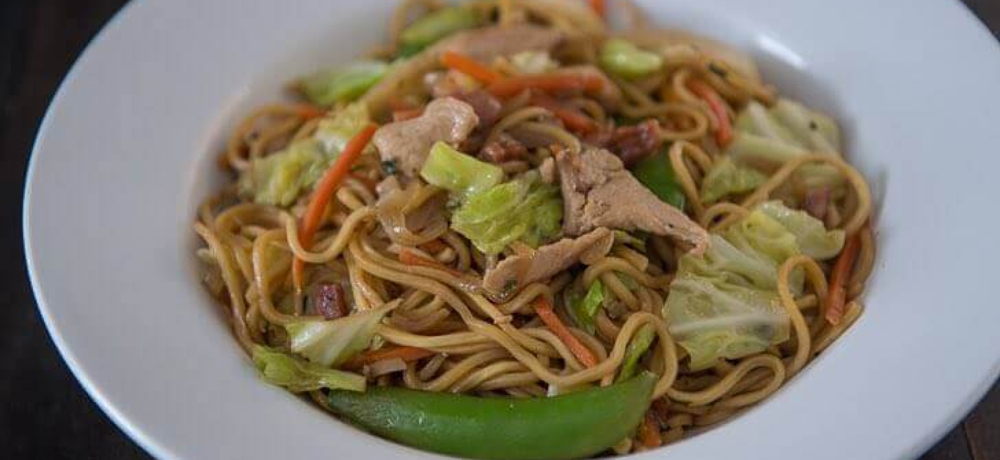
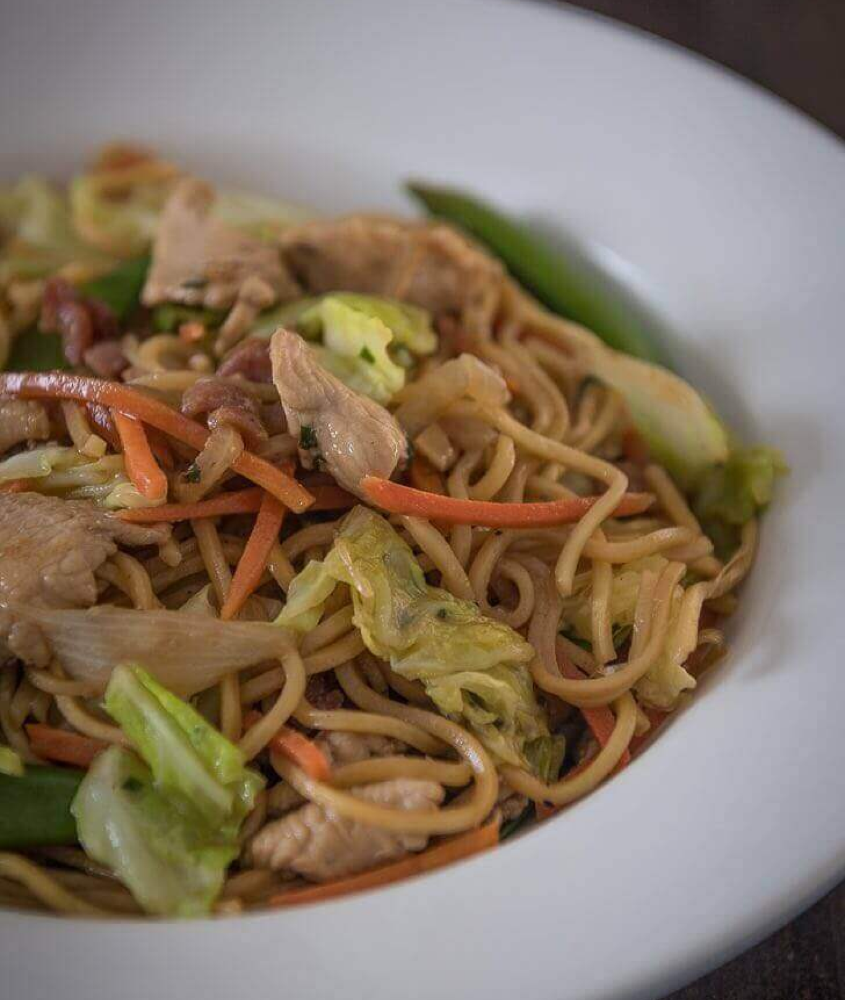
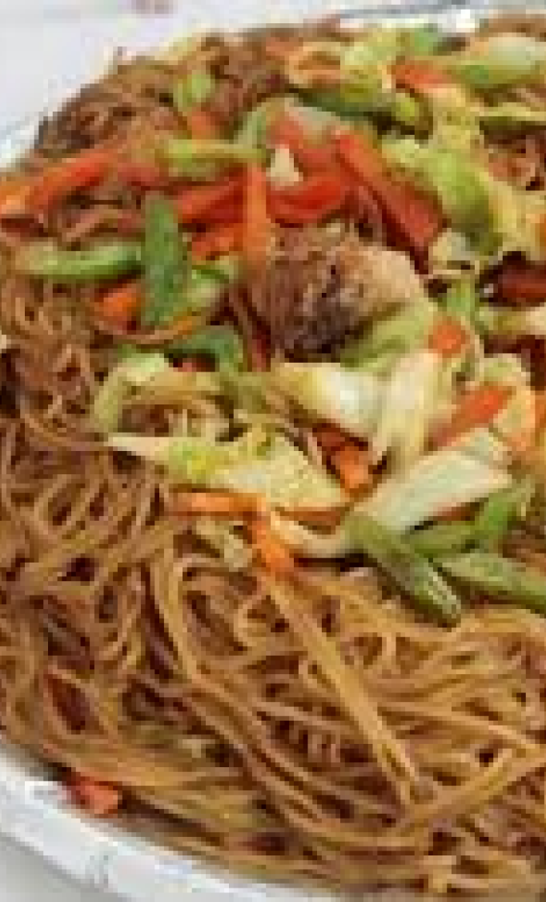
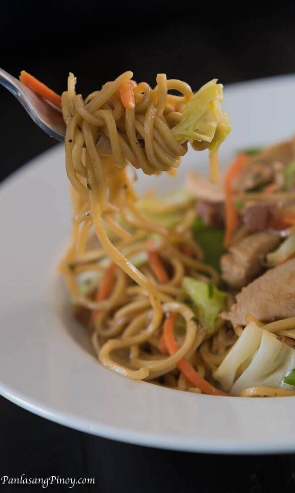
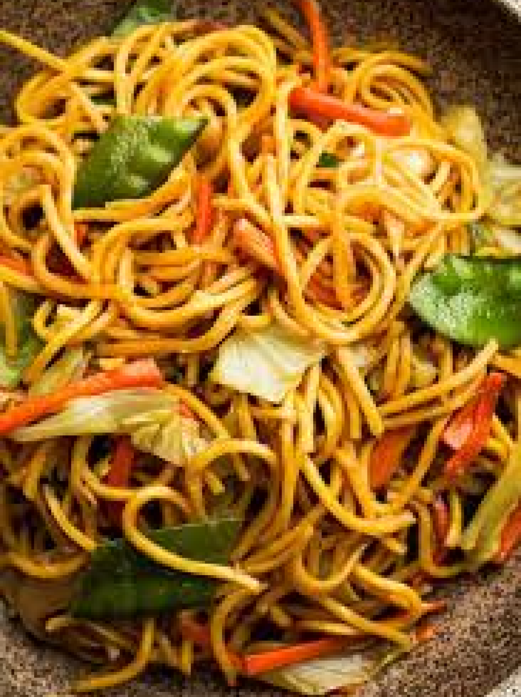

Home
Pancit Canton it is a type of Lo Mein or tossed noodles known as flour
sticks. This dish is often served during birthdays and special occasions
to symbolize long life. It is prepared using a variety of ingredients,
which makes it look festive. There is also a combination of different
flavors that make it delicious.

Canton
Pancit
Ingredients
-
▢
250 grams flour stick noodles
-
4 ounces pork thinly sliced
-
1 piece Chinese sausage sliced
-
1 piece
onion
sliced
-
1 teaspoon
garlic
minced
-
8 to 10 pieces shrimp shell removed
-
10 to 12 pieces snap peas
-
3/4 cup carrot julienne
-
1 piece cabbage small, chopped
-
1 1/2 cups chicken broth
-
1 tablespoon oyster sauce opional
-
3 tablespoons
soy sauce
-
3/4 cup water
-
1/2 cup flat leaf parsley chopped
-
3 tablespoons cooking oil
-
Salt and pepper to taste
Instructions
-
Place 2 cups of ice and 3 cups water in a large bowl. Set
aside.
-
Boil 6 cups of water in a cooking pot.
-
Once the water starts to boil, blanch the snap peas, carrots, and
cabbage for 35 to 50 seconds. Quickly remove the vegetables and
immerse in bowl with ice cold water. Drain the water after 2
minutes and set aside.
-
Heat a large wok or cooking pot and pour-in the cooking
oil.
-
Saute the onion and garlic.
-
Add the pork and sausage slices and continue to cook for 2
minutes.
-
Add-in soy sauce and oyster sauce. Stir.
-
Pour-in chicken broth and water. Add salt and pepper. Let boil.
continue to cook for 5 to 10 minutes.
-
Put-in the shrimp and parsley. Cook for 3 minutes. Add more water
if needed.
-
Put-in the flour noodles. Gently toss until the noodles absorb
the liquid.
-
Add-in the blanched vegetables. Toss and cook for 1 to 2
minutes.
-
Transfer to a serving plate. Serve.
-
Share and enjoy!



